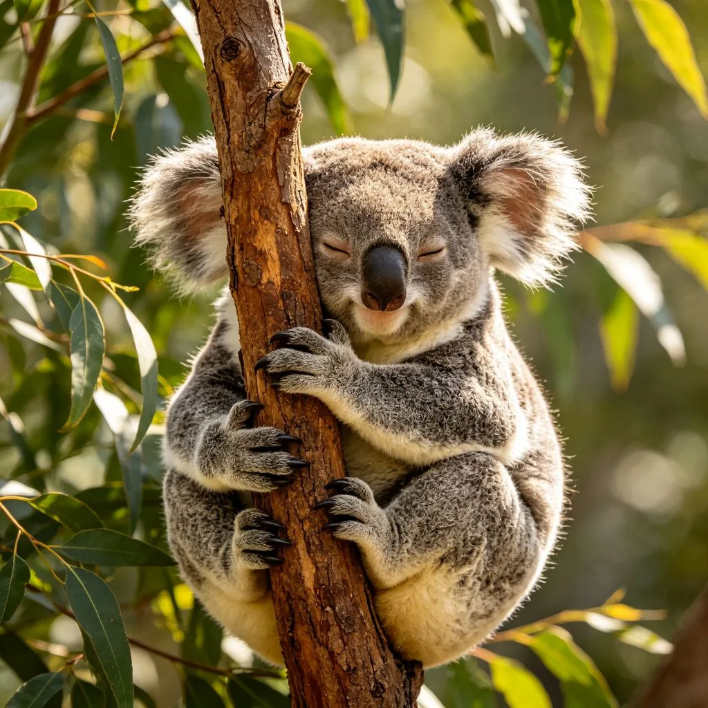
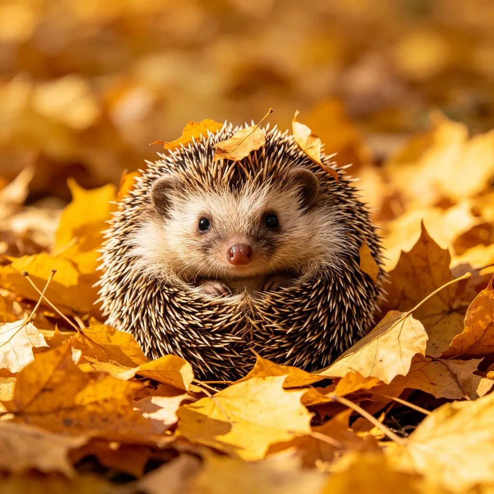

在中美洲和南美洲的熱帶雨林中，一隻三趾樹懶用長長的爪子鉤住樹枝，身體懸掛在半空中，眼睛半閉，一動也不動。如果不是偶爾轉動一下頭，你幾乎以為那是一個樹瘤。樹懶是世界上行動最慢的哺乳動物——牠的最高速度只有每分鐘4公尺，也就是說，穿越一個標準籃球場需要超過10分鐘。長期以來，樹懶被人們視為「懶惰」的代名詞，但近年來的科學研究告訴我們：樹懶的慢，不是缺點，而是一種極其精妙的生存策略。
為什麼樹懶這麼慢？
樹懶的慢，源於牠獨特的生理結構和代謝方式：

- 極低的代謝率：樹懶的代謝率只有同等體型哺乳動物的40-50%。這意味著牠們需要的能量非常少，一隻成年樹懶每天只需要攝取約150大卡的熱量——相當於半個漢堡。這種低代謝率讓樹懶可以在食物匱乏的環境中生存。
- 特殊的肌肉結構：樹懶的肌肉中，慢縮肌纖維的比例非常高。慢縮肌纖維收縮速度慢，但耐力極強，不容易疲勞。這就是為什麼樹懶可以連續幾個小時甚至幾天保持同一個姿勢而不覺得累。
- 低體溫調節：大多數哺乳動物的體溫穩定在36-38°C，但樹懶的體溫可以隨環境溫度在24-33°C之間波動。這種「變溫」特性讓樹懶可以節省大量用於維持體溫的能量，但也意味著牠們在寒冷的環境中行動會更加遲緩。
- 緩慢的消化系統：樹懶的主要食物是樹葉，這種食物營養價值低、難以消化。樹懶的胃有多個腔室，類似於牛的胃，食物在體內可以停留長達一個月才被完全消化。這種緩慢的消化過程意味著樹懶不需要頻繁進食，也不需要頻繁排泄（通常一週只下樹一次排便）。
慢的好處：樹懶的生存智慧
在一個崇尚「快」的世界裡，樹懶的慢似乎是一種劣勢。但在自然界中，這種慢卻是一種極其成功的生存策略：
節省能量，應對食物匱乏
熱帶雨林的樹葉雖然隨處可見，但營養價值很低，而且很多樹葉含有毒素。樹懶的低代謝率和慢消化系統，讓牠們可以依靠這種低品質的食物生存。在食物匱乏的季節，樹懶甚至可以進入類似於冬眠的狀態，進一步降低代謝率來度過難關。

避免被天敵發現
樹懶的主要天敵是美洲豹、角鵰和森蚺。這些天敵主要依靠視覺和運動來發現獵物。樹懶的慢，讓牠們在樹上幾乎不會引起注意——加上樹懶的毛髮中生長著一種綠色的藻類，讓牠們的毛色與樹葉融為一體，形成了極佳的偽裝。科學家發現，樹懶在野外的被捕食率其實很低，大多數樹懶的死亡發生在牠們每週一次下樹排便的時候——因為那是牠們唯一暴露在地面的時候。
獨特的共生生態系
樹懶的毛髮是一個微型的生態系。除了前面提到的綠色藻類，樹懶的毛髮中還生活著數百種昆蟲、蟎蟲和細菌。其中最特別的是「樹懶蛾」——這種蛾子一生都生活在樹懶的毛髮中，以樹懶皮膚的分泌物為食。當樹懶下樹排便時，蛾子會在糞便中產卵，孵化後的幼蟲再趁樹懶下次下樹時爬到牠身上。這種複雜的共生關係，在動物界中是非常罕見的。
樹懶的驚人能力
雖然樹懶在陸地上行動緩慢，但在水中卻是游泳高手——牠們的游泳速度是陸地速度的三倍，可以輕鬆穿越河流和湖泊。此外，樹懶可以把頭旋轉270度（幾乎是一圈），這是因為牠們有比大多數哺乳動物更多的頸椎骨（8-9塊，而人類只有7塊）。這種靈活的脖子讓樹懶可以在懸掛狀態下觀察周圍的環境。
從樹懶身上學習慢生活
在這個講求效率和速度的時代，樹懶或許能給我們一些啟示。「慢生活」（slow living）運動近年來在全球興起，倡導人們放慢腳步，專注於當下，享受生活的過程而非僅僅追求結果。樹懶的生存哲學或許正是這種生活方式的最佳寫照：
首先，慢不等於懶惰。樹懶的慢是為了節省能量、適應環境，是一種有意識的生存策略。同樣，人類的慢生活也不是消極怠工，而是有意識地選擇生活的節奏，把時間花在真正重要的事情上。
其次，慢可以帶來更深的體驗。當樹懶緩慢地移動時，牠們可以敏銳地察覺周圍環境的變化——風的方向、天敵的氣味、食物的位置。同樣，當我們放慢生活節奏時，也能更敏銳地感受生活中的細節——一杯咖啡的香氣、一朵花的綻放、一次與朋友的深度對話。
最後，慢是一種可持續的生活方式。樹懶用最少的能量維持生命，在資源有限的環境中繁衍了數千萬年。人類社會如果繼續追求無限的增長和消費，終將面臨資源枯竭和環境崩壞。或許，從樹懶身上學習「夠用就好」的智慧，是人類可持續發展的重要一課。
樹枝上的樹懶，用牠的慢，在競爭激烈的熱帶雨林中找到了屬於自己的生存空間。或許下次當你感到生活節奏太快、壓力太大時，可以想想那隻在樹上安靜懸掛的樹懶——有時候，慢下來，才是最快的前進方式。